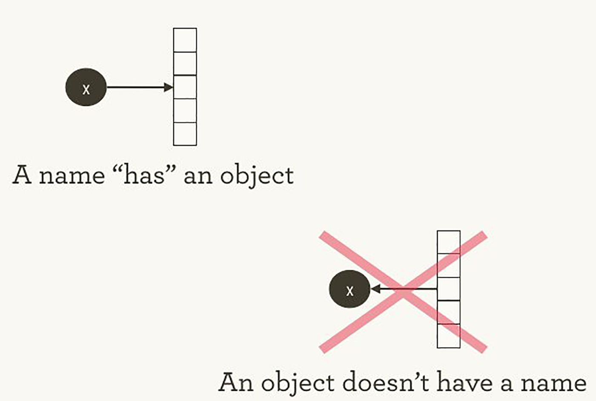
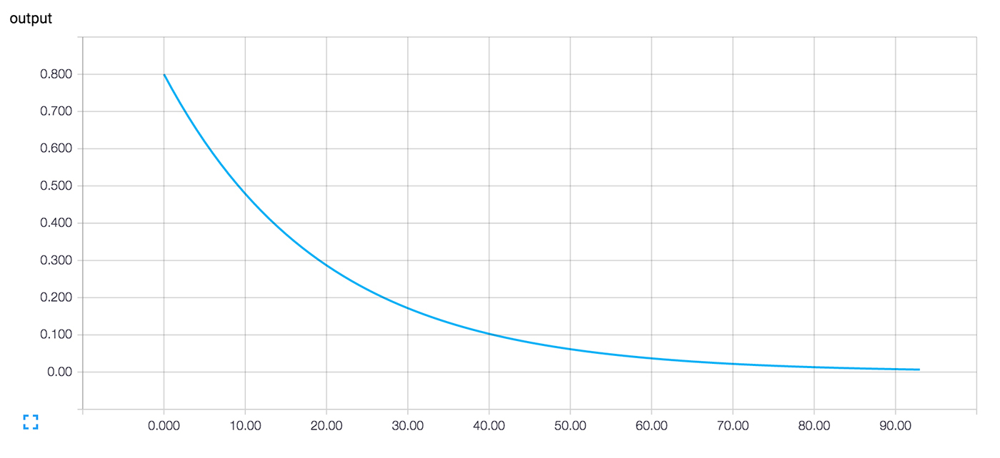

Hello, TensorFlow. Библиотека машинного обучения от Google
https://www.oreilly.com/learning/hello-tensorflow
Проект TensorFlow масштабнее, чем вам может показаться. Тот факт, что это библиотека для глубинного обучения, и его связь с Гуглом помогли проекту TensorFlow привлечь много внимания. Но если забыть про ажиотаж, некоторые его уникальные детали заслуживают более глубокого изучения:
Все это круто, но TensorFlow может быть довольно сложным в понимании, особенно для того, кто только знакомится с машинным обучением.
Как работает TensorFlow? Давайте попробуем разобраться, посмотреть и понять, как работает каждая часть. Мы изучим граф движения данных, который определяет вычисления, через которые предстоит пройти вашим данным, поймем, как тренировать модели градиентным спуском с помощью TensorFlow, и как TensorBoard визуализирует работу с TensorFlow. Наши примеры не помогут решать настоящие проблемы машинного обучения промышленного уровня, но они помогут понять компоненты, которые лежат в основе всего, что создано на TensorFlow, в том числе того, что вы напишите в будущем!
Имена и исполнение в Python и TensorFlow
То, как TensorFlow управляет вычислениями, не сильно отличается от того, как это обычно делает Python. В обоих случаях важно помнить, что, перефразируя Хэдли Уикэма, у объекта нет имени (см. изображение 1). Чтобы понять схожие черты и отличия между принципами работы Python и TensorFlow, давайте взглянем на то, как они ссылаются на объекты и обрабатывают вычисление.

Изображение 1. У имен «есть» объекты, но не наоборот. Иллюстрация Хэдли Уикэма, используется с разрешения автора.
Имена переменных в Python это не то, что они представляют. Они просто указывают на объекты. Так что, когда вы пишете в Python foo = [] и bar = foo, это не значит, что foo равен bar; foo это bar, в том смысле что они оба указывают на один и тот же объект списка.
>>> foo = []
>>> bar = foo
>>> foo == bar
## True
>>> foo is bar
## True
Также можно удостовериться, что id(foo) и id(bar) одинаковы. Эта идентичность, особенно с изменяемыми структурами данных вроде списков, может привести к серьезным багам, если понимать ее неправильно.
Внутри Python управляет всеми вашими объектами и следит за именами переменных и за тем, на какой объект каждое имя ссылается. Граф TensorFlow представляет еще один слой такого типа управления. Как мы увидим позже, имена в Python будут ссылаться на объекты, которые соединены с более детальными и более четко управляемыми операциями на графе TensorFlow.
Когда вы вводите выражение на Python, например, в интерактивном интерпретаторе REPL (Read Evaluate Print Loop), всё, что вы набираете почти всегда будет вычислено сразу. Python горит желанием сделать то, что вы ему прикажете. Так что, если я скажу ему сделать foo.append(bar), он сразу произведет добавление, даже если я никогда не буду использовать foo.
Более ленивая альтернатива — это просто запомнить, что я сказал foo.append(bar), и, если в какой-то момент в будущем я буду вычислять foo, тогда Python произведет добавление. Это уже ближе к тому, как ведет себя TensorFlow: в нем определение отношения не имеет никакого отношения к вычислению результата.
TensorFlow еще сильнее отделяет определение вычисления от его исполнения, так как они происходят вообще в разных местах: граф определяет операции, но операции происходят только внутри сессий. Графы и сессии создаются независимо друг от друга. Граф — это что-то вроде чертежа, а сессия — это что-то вроде строительной площадки.
Возвращаясь к нашему простому примеру с Python, напомню, что foo и bar указывают на один и тот же список. Добавив bar к foo, мы вставили список внутрь себя. Можно представить себе это как граф с одним узлом, который указывает сам на себя. Вложенные списки — это один из способов представления структуры графа, подобного вычислительному графу TensorFlow.
>>> foo.append(bar)
>>> foo
## [[...]]
Настоящие графы TensorFlow будут интереснее!
Простейший граф TensorFlow
Чтобы погрузиться в тему, давайте создадим простейший граф TensorFlow с нуля. К счастью, TensorFlow легче установить, чем некоторые другие фреймворки. Пример здесь будет работать с Python 2.7 или 3.3+, и мы используем версию TensorFlow 0.8.
>>> import tensorflow as tf
К этому моменту TensorFlow уже начал управлять кучей состояний за нас. К примеру, уже существует явный граф по умолчанию. Внутри граф по умолчанию находится в _default_graph_stack, но у нас нет доступа туда напрямую. Мы используем tf.get_default_graph().
>>> graph = tf.get_default_graph()
Узлы графа TensorFlow называются операциями (“operations” или “ops”). Набор операций можно увидеть с помощью graph.get_operations().
>>> graph.get_operations()
## []
Сейчас в графе пусто. Нам нужно будет добавить туда все, что нужно будет вычислить библиотеке TensorFlow. Давайте начнем с добавления простой константы со значением единицы.
>>> input_value = tf.constant(1.0)
Теперь эта константа существует как узел, операция в графе. Python'овское имя переменной input_value косвенно указывает на эту операцию, но ее также можно найти в графе по умолчанию.
>>> operations = graph.get_operations()
>>> operations
## [<tensorflow.python.framework.ops.Operation at 0x1185005d0>]
>>> operations[0].node_def
## name: "Const"
## op: "Const"
## attr {
## key: "dtype"
## value {
## type: DT_FLOAT
## }
## }
## attr {
## key: "value"
## value {
## tensor {
## dtype: DT_FLOAT
## tensor_shape {
## }
## float_val: 1.0
## }
## }
## }
TensorFlow внутри использует формат protocol buffers. (Protocol buffers — это что-то вроде JSON уровня Google). Вывод на экран node_def у константной операции выше показывает, что TensorFlow хранит в представлении protocol buffer для числа один.
Люди, не знакомые с TensorFlow иногда недоумевают, в чем суть создания «TensorFlow-версий» существующих вещей. Почему нельзя просто использовать обычную переменную Python вместо дополнительного определения объекта TensorFlow? В одном из руководств по TensorFlow есть объяснение:
Чтобы производить эффективные численные вычисления в Python, обычно используются библиотеки вроде NumPy, которые совершают такие дорогие операции как перемножение матриц вне Python'а, используя крайне эффективный код, реализованный в другом языке. К сожалению, возникает дополнительная нагрузка при переключении обратно в Python после каждой операции. Эта нагрузка особенно заметна когда нужно производить вычисления на GPU или в распределенном режиме, где передача данных является дорогой операцией.
TensorFlow также производит сложные вычисления вне Python, но он идет еще дальше чтобы избежать дополнительной нагрузки. Вместо того, чтобы запускать одну дорогую операцию независимо от Python, TensorFlow позволяет нам описать граф взаимодействующих операций, которые работают полностью вне Python. Схожий подход используется в Theano и Torch.
TensorFlow умеет делать много крутых штук, но он может работать только с тем, что было явно передано ему. Это справедливо даже для одной константы.
Если взглянуть на наш input_value, то можно увидеть ее как 32-битный тензор нулевого измерения: просто одно число.
>>> input_value
## <tf.Tensor 'Const:0' shape=() dtype=float32>
Заметьте, что значение не указано. Чтобы вычислить input_value и получить численное значение, нужно создать «сессию», в которой можно вычислять операции графа, а потом явно вычислить или «запустить» input_value. (Сессия использует граф по умолчанию).
>>> sess = tf.Session()
>>> sess.run(input_value)
## 1.0
Может показаться странным «запускать» константу. Но это не сильно отличается от обычного вычисления выражения в Python. Просто TensorFlow управляет собственным пространством для данных — вычислительным графом, и у него есть свои методы для вычисления.
Простейший нейрон TensorFlow
Теперь, когда у нас есть сессия с простым графом, давайте построим нейрон с одним параметром или весом. Зачастую, даже простые нейроны также включают в себя bias term и non-identity activation function, но мы обойдемся без них.
Вес нейрона не будет константным. Мы ожидаем, что он будет меняться при обучении, основываясь на истинности входных и выходных данных, используемых для обучения. Вес будет переменной TensorFlow. Мы дадим ей начальное значение 0.8.
>>> weight = tf.Variable(0.8)
Можно подумать, что добавление переменной добавит операцию в граф, но на самом деле одна эта строчка добавит четыре операции. Можно узнать их имена:
>>> for op in graph.get_operations(): print(op.name)
## Const
## Variable/initial_value
## Variable
## Variable/Assign
## Variable/read
Не хочется слишком долго разбирать каждую операцию "по косточкам", давайте лучше создадим хотя бы одну, похожую на настоящее вычисление:
>>> output_value = weight * input_value
Теперь в графе шесть операций, и последняя — это перемножение.
>>> op = graph.get_operations()[-1]
>>> op.name
## 'mul'
>>> for op_input in op.inputs: print(op_input)
## Tensor("Variable/read:0", shape=(), dtype=float32)
## Tensor("Const:0", shape=(), dtype=float32)
Здесь видно, как операция умножения следит за источником входных данных: они приходят из других операций в графе. Человеку довольно сложно следить за всеми связями чтобы понять структуру всего графа. Визуализация графа TensorBoard создана специально для этого.
Как определить результат умножения? Нужно «запустить» операцию output_value. Но эта операция зависит от переменной weight. Мы указали, что начальное значение weight должно быть 0.8, но значение еще не было установлено в текущей сессии. Функция tf.initialize_all_variables() генерирует операцию, которая инициализирует все переменные (в нашем случае только одну), и потом мы можем запустить эту операцию.
>>> init = tf.initialize_all_variables()
>>> sess.run(init)
Результат выполнения tf.initialize_all_variables() включает инициализаторы для всех переменных, которые находятся в графе на текущий момент, так что если вы добавите новые переменные, то нужно будет запускать tf.initialize_all_variables() заново; простой init не включит новые переменные.
Теперь мы готовы запустить операцию output_value.
>>> sess.run(output_value)
## 0.80000001
Это 0.8 * 1.0 с 32-битными float'ами, а 32-битные float'ы с трудом понимают число 0.8. Значение 0.80000001 это самое близкое, что они смогли сделать.
Смотрим на граф в TensorBoard
Наш граф пока еще довольно прост, но уже было бы хорошо увидеть его представление в виде диаграммы. Используем TensorBoard, чтобы сгенерировать такую диаграмму. TensorBoard читает поле имени, которое хранится в каждой операции (это совсем не то же, что имена переменных Python). Можно использовать эти имена TensorFlow и перейти на более привычные имена переменных Python. Использование tf.mul эквивалентно простому умножению с * в примере выше, но здесь можно установить имя для операции.
>>> x = tf.constant(1.0, name='input')
>>> w = tf.Variable(0.8, name='weight')
>>> y = tf.mul(w, x, name='output')
TensorBoard смотрит в директорию вывода, созданную из сессий TensorFlow. Мы можем писать в этот вывод с помощью SummaryWriter, и, если не делать ничего кроме одного графа, то будет записан только один граф.
Первый аргумент при создании SummaryWriter — это название директории для вывода, которая будет создана при необходимости.
>>> summary_writer = tf.train.SummaryWriter('log_simple_graph', sess.graph)
Теперь можно запустить TensorBoard в командной строке.
$ tensorboard --logdir=log_simple_graph
TensorBoard запускается как локальное веб-приложение на порте 6006. (“6006” это “goog” вверх ногами). Если зайти в браузере на localhost:6006/#graphs, то можно увидеть диаграмму графа, созданного в TensorFlow. Выглядит это примерно как на изображении 2.

Изображение 2. Визуализация TensorBoard простейшего нейрона TensorFlow.
Обучаем нейрон
Мы создали нейрон, но как он будет обучаться? Мы установили вводное значение 1.0. Допустим, правильное конечное значение это ноль. То есть у нас есть очень простой набор данных для обучения с одним примером с одной характеристикой: значение равно единице и отметка равна нулю. Мы хотим научить нейрон преобразовывать единицу в ноль.
Сейчас система принимает единицу и возвращает 0.8, что не является корректным поведением. Нужен способ определить, насколько система ошибается. Назовем эту меру ошибочности «потерей» ("loss") и зададим системе цель минимизировать потерю. Если потеря может быть отрицательным числом, то минимизация не имеет смысла, поэтому давайте определим потерю как квадрат разницы между текущем входным значением и желаемым выходным значением.
>>> y_ = tf.constant(0.0)
>>> loss = (y - y_)**2
До этого момента ничто в графе не учится. Для обучения нам нужен оптимизатор. Мы используем функцию градиентного спуска чтобы иметь возможность обновлять вес на основе значения производной потери. Оптимизатору нужно задать уровень обучения для управления размерном обновлений, мы зададим 0.025.
>>> optim = tf.train.GradientDescentOptimizer(learning_rate=0.025)
Оптимизатор необыкновенно умен. Он может автоматически определить и использовать нужный градиент на уровне всей сети, производя пошаговое движение назад для обучения.
Взглянем на то, как выглядит градиент для нашего простого примера.
>>> grads_and_vars = optim.compute_gradients(loss)
>>> sess.run(tf.initialize_all_variables())
>>> sess.run(grads_and_vars[1][0])
## 1.6
Почему значение градиента 1.6? Значение потери возводится в квадрат, и производная — это ошибка, умноженная на два. Сейчас система возвращает 0.8 вместо 0, так что ошибка это 0.8, и ошибка, умноженная на два — это 1.6. Работает!
В более сложных системах будет особенно полезно, что TensorFlow автоматически вычисляет и применяет эти градиенты за нас.
Давайте применим градиент чтобы закончить обратное распространение.
>>> sess.run(optim.apply_gradients(grads_and_vars))
>>> sess.run(w)
## 0.75999999 # about 0.76
Вес уменьшился на 0.04 потому что оптимизатор отнял градиент, умноженный на уровень обучения, 1.6 * 0.025, двигая вес в нужную сторону.
Вместо того, чтобы вести оптимизатор за ручку таким образом, можно сделать операцию, которая вычисляет и применяет градиент: train_step.
>>> train_step = tf.train.GradientDescentOptimizer(0.025).minimize(loss)
>>> for i in range(100):
>>> sess.run(train_step)
>>>
>>> sess.run(y)
## 0.0044996012
После многократного запуска обучающего шага вес и конечное значение стали очень близки к нулю. Нейрон научился!
Диагностика обучения в TensorBoard
Нам может быть интересно, что происходит во время обучения. Например, мы хотим проследить за тем, что система предсказывает на каждом шагу обучения. Можно выводить значение на экран в каждом шаге цикла.
>>> for i in range(100):
>>> print('before step {}, y is {}'.format(i, sess.run(y)))
>>> sess.run(train_step)
>>>
## before step 0, y is 0.800000011921
## before step 1, y is 0.759999990463
## ...
## before step 98, y is 0.00524811353534
## before step 99, y is 0.00498570781201
Это сработает, но есть некоторые проблемы. Сложно воспринимать список цифр. График был бы лучше. Даже с одним значением вывода слишком много. А мы скорее всего захотим следить за несколькими значениями. Хорошо бы записывать все более систематично.
К счастью, та же система, что использовалась раньше для визуализации графа, включает в себя нужный нам механизм.
Добавим в вычислительный граф операцию, которая вкратце описывает его состояние. В нашем случае операция докладывает текущее значение y, текущий вывод нейрона.
>>> summary_y = tf.scalar_summary('output', y)
Запуск этой операции возвращает строку в формате protocol buffer, которую можно записывать в директорию логов с помощью SummaryWriter.
>>> summary_writer = tf.train.SummaryWriter('log_simple_stats')
>>> sess.run(tf.initialize_all_variables())
>>> for i in range(100):
>>> summary_str = sess.run(summary_y)
>>> summary_writer.add_summary(summary_str, i)
>>> sess.run(train_step)
>>>
Теперь после запуска tensorboard --logdir=log_simple_stats, на странице localhost:6006/#events выводится интерактивный график (Изображение 3).

Изображение 3. Визуализация TensorBoard выходного значения нейрона и номера итерации обучения.
Двигаемся дальше
Вот конечная версия кода. Его не так много, и каждая часть показывает полезную (и понятную) функциональность TensorFlow.
import tensorflow as tf
x = tf.constant(1.0, name='input')
w = tf.Variable(0.8, name='weight')
y = tf.mul(w, x, name='output')
y_ = tf.constant(0.0, name='correct_value')
loss = tf.pow(y - y_, 2, name='loss')
train_step = tf.train.GradientDescentOptimizer(0.025).minimize(loss)
for value in [x, w, y, y_, loss]:
tf.scalar_summary(value.op.name, value)
summaries = tf.merge_all_summaries()
sess = tf.Session()
summary_writer = tf.train.SummaryWriter('log_simple_stats', sess.graph)
sess.run(tf.initialize_all_variables())
for i in range(100):
summary_writer.add_summary(sess.run(summaries), i)
sess.run(train_step)
Этот пример еще проще, чем примеры из Neural Networks and Deep Learning Майкла Нильсена, которые и послужили вдохновением. Лично мне изучение таких деталей помогает понимать и строить более сложные системы, которые используют простые строительные блоки как основу.
Если хотите продолжить эксперименты с TensorFlow, то советую попробовать сделать более интересные нейроны, например, с другой функцией активации. Можно производить обучение с более интересными данными. Можно добавить больше нейронов. Можно добавить больше слоев. Можно нырнуть в более сложные готовые модели, или провести больше времени за изучением собственных пособий и гайдов TensorFlow. Успехов!